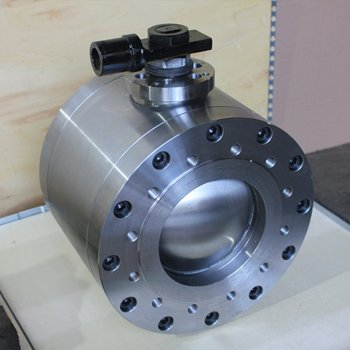

Шаровой кран Batu BBTKV-FS DN25 PN40 межфланцевый
BATU (Турция)
Раздел: Краны для СУГ · АГЗС
| Диаметр условного прохода DN (ДУ) | 25 |
Цена и наличие — по запросу. Поставляем оригинал и аналоги. Доставка по России.
Модификации и размеры (8)
- Шаровой кран Batu BBTKV-FS DN25 PN40 межфланцевый
- Шаровой кран Batu BBTKV-FS Dn 50 Pn 40 межфланцевый
- Шаровой кран Batu BBTKV-FS Dn 32 Pn 40 межфланцевый
- Шаровой кран Batu BBTKV-FS Dn 80 Pn 40 межфланцевый
- Шаровой кран Batu BBTKV-FS Dn 40 Pn 40 межфланцевый
- Шаровой кран Batu BBTKV-FS Dn 20 Pn 40 межфланцевый
- Шаровой кран Batu BBTKV-FS Dn 65 Pn 40 межфланцевый
- Шаровой кран Batu BBTKV-FS Dn 15 Pn 40 межфланцевый
Подберём нужный вариант — уточните при запросе.
Описание
Шаровой кран Batu BBTKV-FS DN25 PN40 межфланцевый производства BATU (Турция) — позиция из раздела «Краны для СУГ» для АГЗС. Компания SYNDICAT поставляет оборудование и комплектующие для автозаправочных и газозаправочных станций по всей России. Цена и наличие «Шаровой кран Batu BBTKV-FS DN25 PN40 межфланцевый» — по запросу: оставьте заявку или позвоните, подберём оригинал или аналог и рассчитаем доставку.